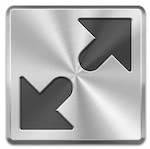

<div ng-app="mapApp" ng-controller="googleMapCtrl as map">
   
   <div id="map"></div>
   
   <div id="class" ng-repeat="marker in map.markers">
         <a href="##" ng-click="map.openInfoWindow($event, marker);" />
   </div>

</div>

   <div ng-app="mapApp" ng-controller="fullScreenController as fc"> 
       <a href="#" ng-click="fc.fullScreen();" ></a>
   </div>